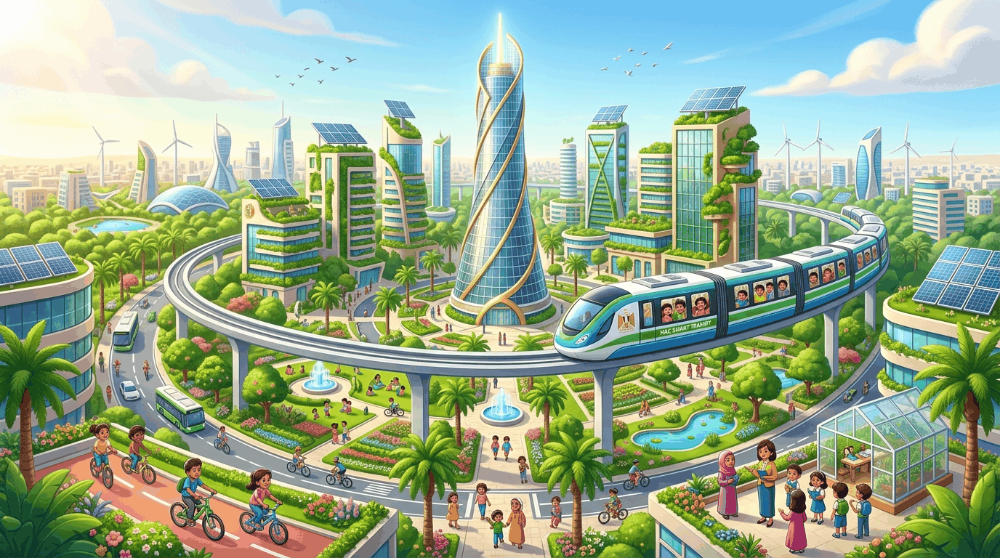

الوحدة الثانية: مدينتنا وحياتنا اليومية • الجزء الثاني
الخدمات: هي كل عمل أو نشاط توفره الدولة لتلبية احتياجات المواطنين وتحسين جودة حياتهم، وتتنوع بين خدمات تعليمية، وصحية، وأمنية، وترفيهية وثقافية، وتجارية.
| نوع الخدمة | أهم المؤسسات والمنشآت | الدور والهدف للمواطنين |
|---|---|---|
| الخدمات التعليمية | المدارس، المعاهد، الجامعات، والمنصات التعليمية مثل بنك المعرفة. | تعليم الأبناء، محو الأمية، وبناء أجيال من العلماء والمفكرين. |
| الخدمات الصحية | المستشفيات العامة، الوحدات الصحية، مراكز الإسعاف، وحملة 100 مليون صحة. | علاج المرضى، توفير الأدوية، والتطعيمات الدورية المجانية للأطفال. |
| الخدمات الأمنية | أقسام الشرطة، ورجال المرور، والدفاع المدني (الإطفاء)، والجيش المصري. | حفظ الأمن والأمان، حماية ممتلكات المواطنين، وحماية حدود الوطن. |
| الخدمات الثقافية والترفيهية | قصور الثقافة، المكتبات العامة (كمكتبة الإسكندرية)، الأندية، والحدائق العامة. | تنمية المواهب، نشر القراءة والمعرفة، وقضاء أوقات ممتعة مع الأسرة. |
| الخدمات البريدية والتجارية | مكاتب البريد المصري، والأسواق التجارية والمجمعات الاستهلاكية. | صرف المعاشات، إرسال الحوالات، وتوفير السلع الغذائية بأسعار مخفضة. |
الخدمات دي زي فريق عمل كبير بيشتغل علشانك 24 ساعة: دكتور يعالجك لما تتعب، مدرس يعلمك في مدرستك، ضابط يحميك وأنت نايم في أمان، ومكتب بريد يسهل معاملات أهلك.. واجبنا إيه نحوهم؟ نحافظ على نظافة المستشفيات والمدارس ومنكسرش حاجة فيها أبداً!
هي مدن عصرية حديثة تعتمد على التكنولوجيا الرقمية والطاقة المتجددة النظيفة (الشمسية والرياح)، وتهدف إلى الحفاظ على البيئة وتقليل التلوث وإعادة تدوير المخلفات وترشيد استهلاك المياه.

| المدينة الذكية في مصر | أهم مميزاتها والمواصفات المستقبلية |
|---|---|
| العاصمة الإدارية الجديدة | • أول مدينة ذكية خضراء في مصر والشرق الأوسط. • تضم حي المال والأعمال والبرج الأيقوني (أطول برج في إفريقيا). • تعتمد أسطح مبانيها على الخلايا الشمسية لتوليد طاقة نظيفة. • شبكات إدارة نفايات ومياه ذكية يتم التحكم فيها رقمياً. |
| مدينة العلمين الجديدة | مدينة سياحية وسكنية وصناعية متكاملة على ساحل البحر المتوسط صديقة للبيئة. |
| مدينة المنصورة الجديدة | مدينة ساحلية ذكية في الدلتا مجهزة بأحدث المرافق والجامعات الدولية. |
( أ- الصحية | ب- التعليمية | جـ- الأمنية | د- الترفيهية )
( أ- المعلمين | ب- الجيش المصري | جـ- الأطباء | د- البريد )
( أ- العاصمة الإدارية الجديدة | ب- شبرا الخيمة | جـ- دمنهور | د- المحلة الكبرى )
( أ- الأمنية | ب- الترفيهية | جـ- الصحية | د- البريدية )
( أ- الطاقة الشمسية والرياح | ب- الفحم الحجري | جـ- البترول الملوث | د- القمامة المحروقة )
الإجابة: ................................................................................................................................................................................
الإجابة: ................................................................................................................................................................................
الإجابة: ................................................................................................................................................................................
1- الخدمات العامة (كل ما توفره الدولة لتيسير شؤون حياة المواطنين).
2- المدن الذكية المستدامة (تعتمد على الحلول الرقمية والطاقة المتجددة لتقليل التلوث).
3- مكاتب البريد المصري (تقدم خدمات مالية وبريدية كالمعاشات ودفاتر التوفير).
4- البرج الأيقوني (أعلى ناطحة سحاب في إفريقيا بحي المال بالعاصمة الإدارية).
5- مبادرة 100 مليون صحة (مبادرة صحية رائدة للقضاء على فيروس سي والأمراض المزمنة).
(1) ب- التعليمية | لأن المدارس تبني العقول وتوفر المعرفة.
(2) ب- الجيش المصري | حماة الوطن ودرعه الحصين في مواجهة الأعداء.
(3) أ- العاصمة الإدارية الجديدة | صممت بأحدث المعايير الذكية والخضراء عالمياً.
(4) ب- الترفيهية | للترويح عن النفس وممارسة الأنشطة الرياضية والعائلية.
(5) أ- الطاقة الشمسية والرياح | طاقة نظيفة متجددة لا تسبب انبعاثات كربونية ولا تلوث.
(1) ( ✗ ) خطأ. التصويب: تقدم الدولة منظومة متكاملة من الخدمات: تعليم، صحة، أمن، ترفيه، وبنية تحتية.
(2) ( ✓ ) صواب. نجحت في فحص وعلاج ملايين المواطنين مجاناً.
(3) ( ✗ ) خطأ. التصويب: الطاقة الشمسية طاقة نظيفة تماماً تحمي البيئة من التلوث.
(4) ( ✓ ) صواب. واجب وطني وأخلاقي للحفاظ على ممتلكات الوطن وثرواته.
(5) ( ✗ ) خطأ. التصويب: يقع البرج الأيقوني في العاصمة الإدارية الجديدة.
السؤال الرابع: (1) الصحية | (2) الثقافية.
السؤال الخامس (بم تفسر):
(1) لتقليل الازدحام السكاني، وتوفير حياة كريمة متطورة، والحفاظ على البيئة باستخدام الطاقة النظيفة وتكنولوجيا المستقبل.
(2) لحفظ الأمن والنظام داخل المجتمع، وحماية المواطنين وممتلكاتهم، والقبض على الخارجين عن القانون.
السؤال السادس (ماذا يحدث إذا):
(1) لانتشرت الأمراض والأوبئة بين السكان، وصعب على المرضى الحصول على العلاج والرعاية الطبية، وتدهورت صحة المجتمع.